Chaque saison impose ses propres couleurs et styles.
L’hiver privilégie des tons profonds, le printemps des nuances pastel, et l’été des couleurs lumineuses et
légères.
Ces palettes reflètent l’évolution naturelle de la mode au
fil des saisons.
-HIVER-
L’hiver s’impose avec des matières chaudes et des silhouettes structurées. Les tons profonds comme le bleu nuit, le bordeaux ou le vert sapin dominent, apportant élégance et intensité aux looks de saison.
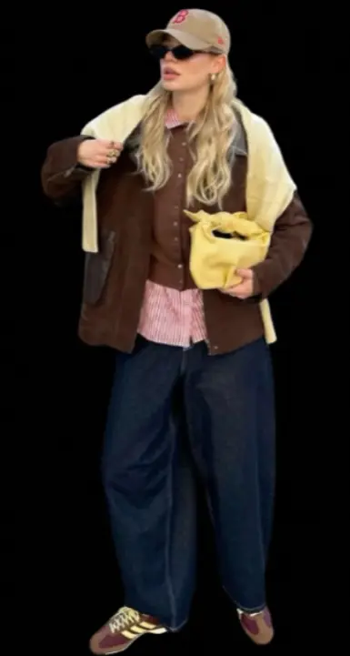
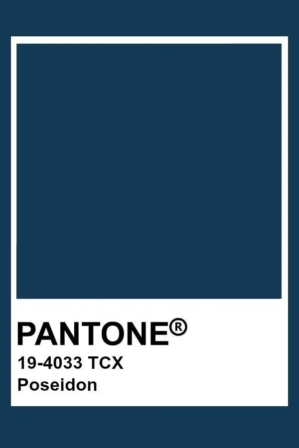
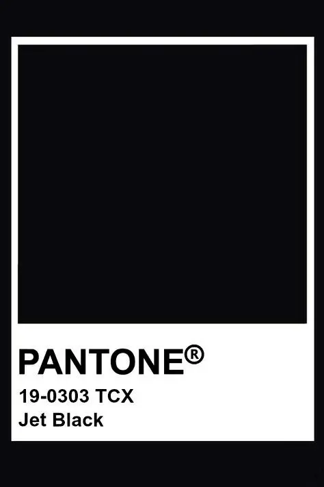
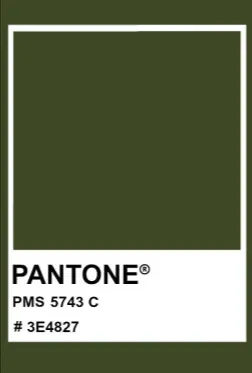
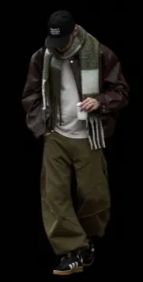
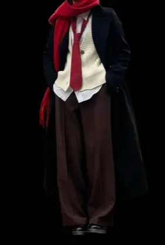
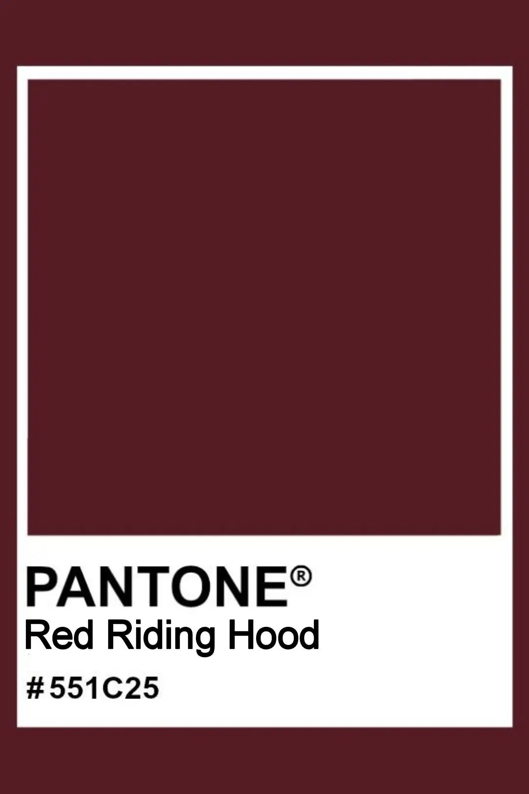
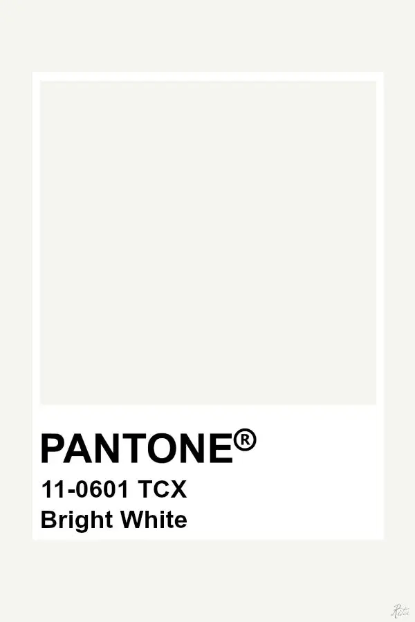
-PRINTEMPS-
Le printemps apporte des looks légers et lumineux inspirés du renouveau. Les couleurs pastel comme le rose, la lavande, le vert tendre ou le bleu clair dominent, créant une palette douce et fraîche. C’est la saison des silhouettes aériennes et des teintes délicates.
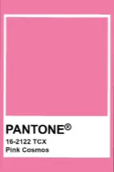
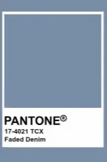
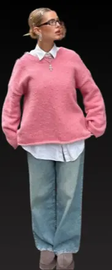
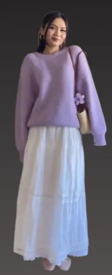
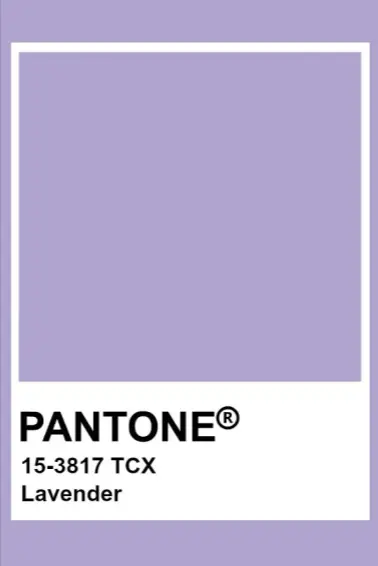
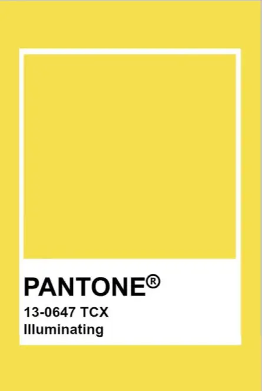
-ÉTÉ-
L’été privilégie des silhouettes fluides et aérées, parfaites pour les journées ensoleillées. Les couleurs claires et lumineuses dominent, comme le blanc, le beige, le bleu océan ou le vert menthe. Une palette fraîche et solaire qui rappelle l’esprit des vacances.
 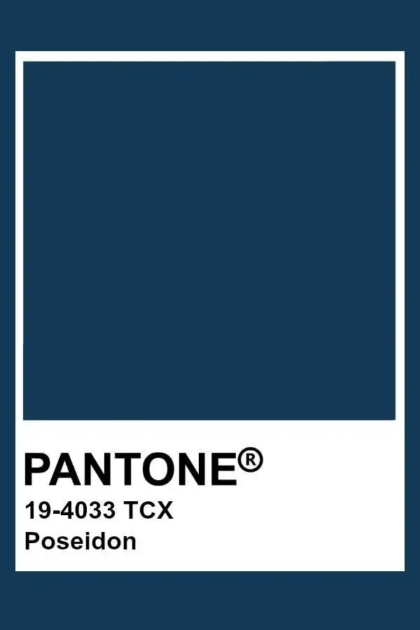
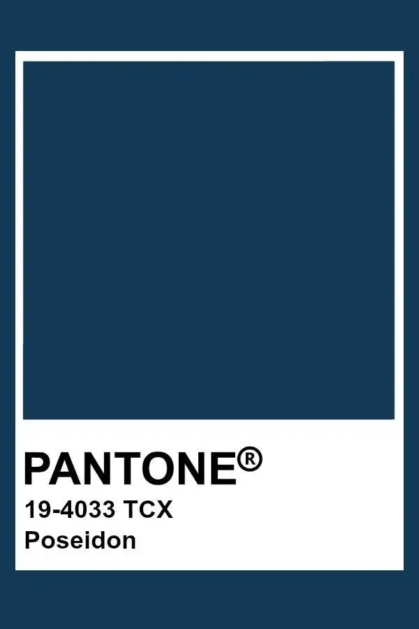